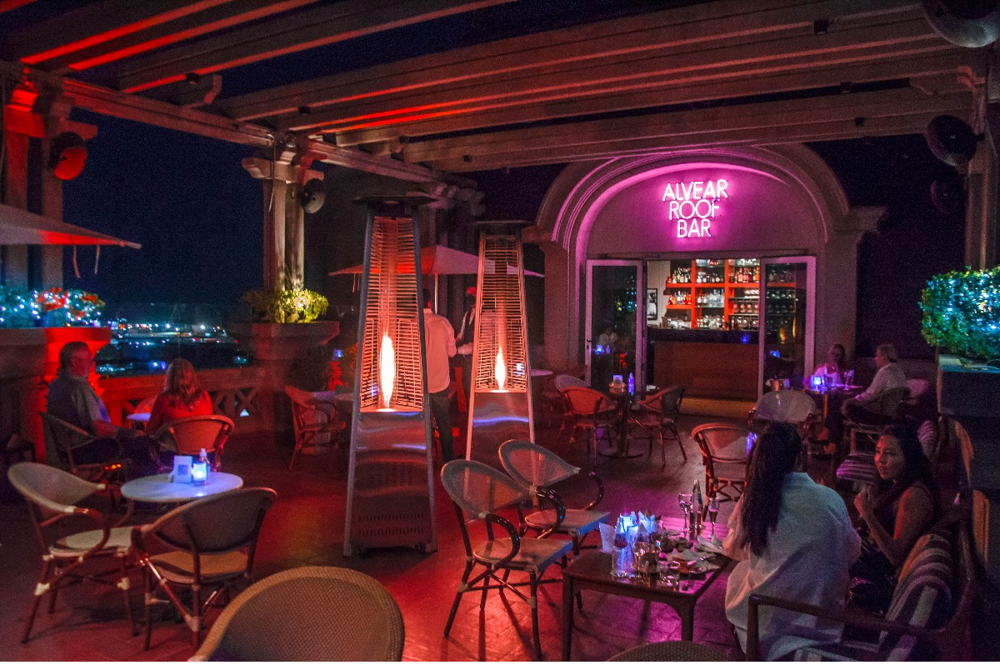

Tour Recoleta
Tour en el Barrio de Recoleta + Alvear Roof Bar
📍 Junín 1760 piso 11, C1113 CABA
Valor del tour: $6.000
2 hs a 2 hs con 30 minutos
Salida desde Plaza de Mayo, esquina Bolívar e Hipólito Yrigoyen
Incluye
- Ingreso al Cabildo
- Paseo de la Historieta “Mafalda”
- Vista del Centro Cultural “Manzana de las Luces”
- Teatro Colón *
- Obelisco
- Museo Nacional de Bellas Artes*
- Cementerio de la Recoleta
- Alvear Roof Bar*
*Opción de bajada en el teatro, previa compra de las entradas de manera presencial en el teatro. Costo de las entradas desde $1800.- y visitas guiadas en inglés, español y portgués.
*El Museo Nacional de Bellas Artes cuenta con entrada libre y gratuita pero con previa reservación completando el formulario en su página web, además todas las actividades son de entrada gratuita. Punto de encuentro: Hall central del Museo.
*Alvear Roof Bar con previa reserva de un mínimo de 24 hs, los días feriados y fines de semana se puede ver afectada su disponibilidad.
Este barrio comienza a formarse a fines del siglo XVIII cuando las extensas chacras y quintas de la
zona que lo formaron, comenzaron a dividirse y ser edificadas.
Tomó su nombre del Convento de Recoletos Descalzos, levantado en una chacra llamada “Los Ombúes”, que
recibió el vecino fundador y primer alcalde, Rodrigo Ortiz de Zarate, en el reparto de tierras hecho por
Juan de Garay en 1583.
Era un lugar despoblado y solitario y al aumentar la edificación, establecerse el matadero y el
cementerio del Norte, fue cambiando su aspecto y transformándose. Luego, con la creación del paseo de la
Recoleta, se convirtió en un barrio residencial y lujoso.
La evolución de este barrio fue rápida, no pasó por la fase intermedia de la modesta vivienda del
artesano. Las quintas del lugar desaparecieron casi en su totalidad hasta convertirse en una de las
zonas más lujosas de la Ciudad.
Debido a la epidemia de fiebre amarilla en 1871, las familias que habitaban la zona sur, debieron
emigrar hacia el norte en donde construyeron mansiones de estilo francés muy refinado que cambiaron el
paisaje arquitectónico del barrio y lo hicieron conocido a través del nombre la Petit París de Buenos
Aires.
El Hotel Alvear es uno de los hoteles más exclusivos de la Argentina. Ubicado en la sofisticada avenida Alvear de Recoleta y patrimonio histórico de la Ciudad, tiene un bar en el piso 11 al que se puede acceder sin necesidad de estar hospedado y es una de las visitas obligadas para quienes busquen rooftops porteños. El menú del Alvear Roof Bar es preparado por los chefs del hotel y pueden encontrarse desde snacks, tapas y sandwiches hasta la degustación de sushi en vivo.